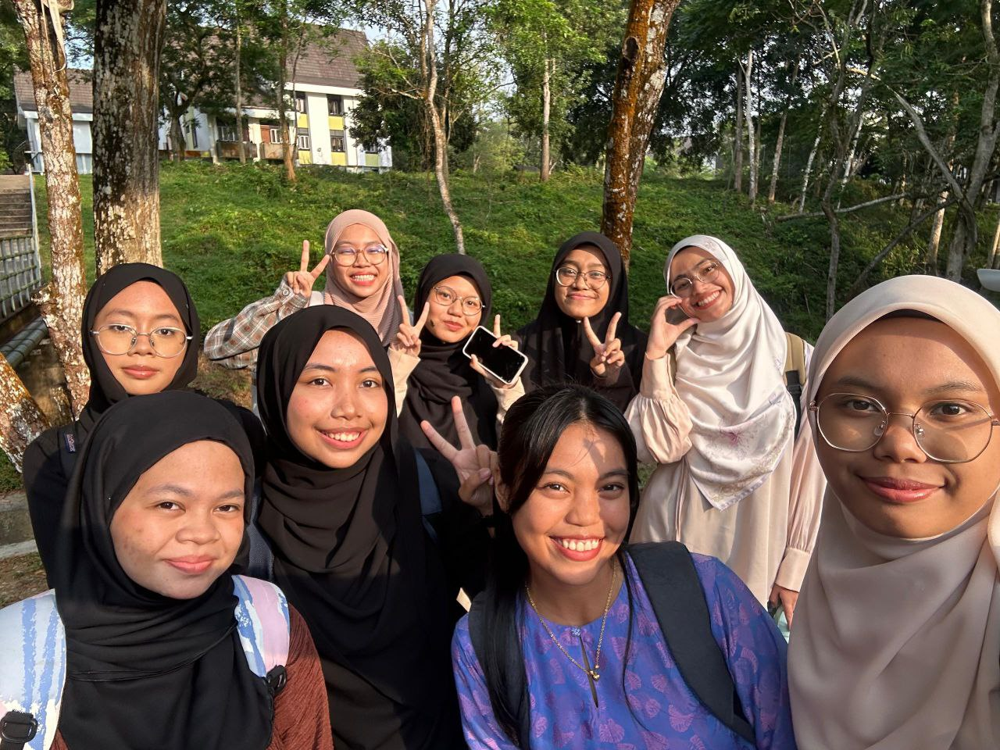
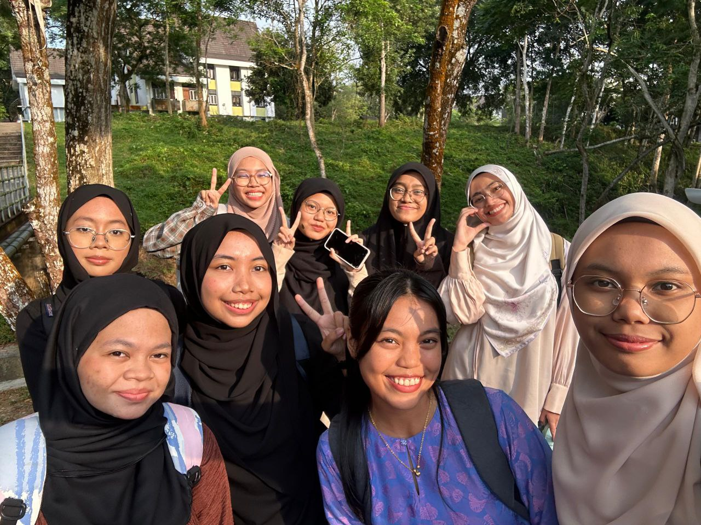

Life
My name is Auni Sofia. I was born in 6 Januari 2005 at Pusat Perubatan Universiti Malaya, Kuala Lumpur. I live in Klang, Selangor. Coming from a family of four, I am the youngest one.


Education
I started my school life in Sekolah Rendah Ibn Khaldun, located in Shah Alam, Selangor. During this phase, I've became a prefect for 3 years to contribute possitively to the school environment.
I continue my school journey in SMK (P) RAJA ZARINA that is located in Port Klang, Selangor from 13 to 18 years old. When I was 16 year old, my journey as a crew member and technician for TVPSS SMK (P) RAJA ZARINA marked the beginning of my interest in technology and artificial intelligence (AI). I was drawn to this role due to my curiousity on how the technology work behind the scene.


After finished my SPM(Sijil Pelajaran Malaysia), I got accepted into Melaka Matriculation College, Masjid Tanah, Malacca and pursue Computer Science course that include computer science, chemistry, mathematics and biology.


Now until today, I'm pursuing my degree life in Data Engineering at Universiti Teknologi Malaysia. My life here has been filled with new friends, exciting adventures, and the hope of surviving all challenges that come my way.


 
